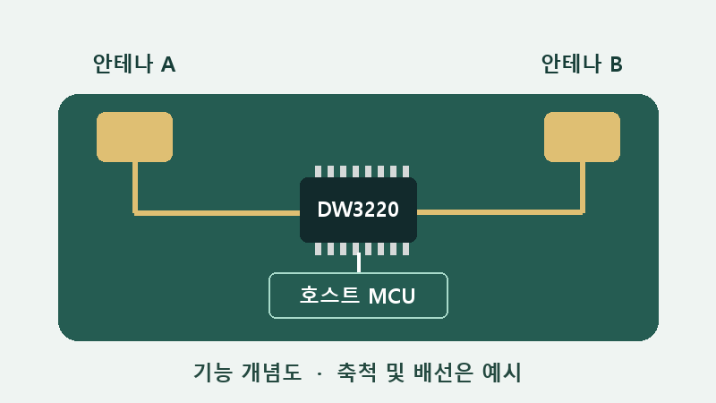

스마트헤드폰 · UWB 하드웨어
DW3220
두 안테나의 위상차로 입사각을 구하는 구성
DW3220은 5 × 5 mm QFN 패키지의 UWB 송수신 IC다. 이 치수에는 안테나, MCU, 기준 클록, 전원 회로가 포함되지 않는다. 신규 설계에서는 제외하고 보유품 평가 대상으로 다룬다.


구성 부품과 역할
송수신 IC
DW3220
두 RF 포트에서 받은 신호의 위상차(PDoA)를 측정할 수 있다. 채널 5와 9를 지원한다.
외부 RF 설계
안테나 2개와 정합 회로
안테나의 간격과 축이 각도 해석의 기준이다. 경로별 위상 오프셋을 실제 보드·케이스에서 보정해야 각도 추정에 쓸 수 있다.
외부 제어부
MCU·클록·전원
호스트가 SPI로 IC를 설정하고 거리·위상차를 읽는다. 펌웨어가 보정값을 적용하고 결과를 게이트웨이에 전달한다.
측정값이 만들어지는 과정
- 같은 프레임을 두 RF 경로로 수신
- 두 경로의 위상차 측정
- 보정값과 배열 기하로 도래각 추정
안테나 배열을 고정 앵커에 배치하면 앵커 기준의 태그 방향을 얻는다. 두 안테나만으로 방위각·고도각 모두를 결정할 수 있다고 가정하면 안 된다. 헤드폰 내장 시에는 별도 RF 기판과 기존 U4가 필요하다.
프로젝트에서 확인할 항목
보유 보드의 칩 표시와 안테나 경로부터 확인한다. 고정 거리에서 알려진 각도로 태그를 옮겨 각도 오차를 기록한다. iOS·Android 전용 앱은 특정 실장 보드와 펌웨어 조합이 미확인이다. Qorvo가 공지한 최종 주문일은 2027년 2월 28일이며, 대체 시 PCB·RF 재검증이 필요하다.